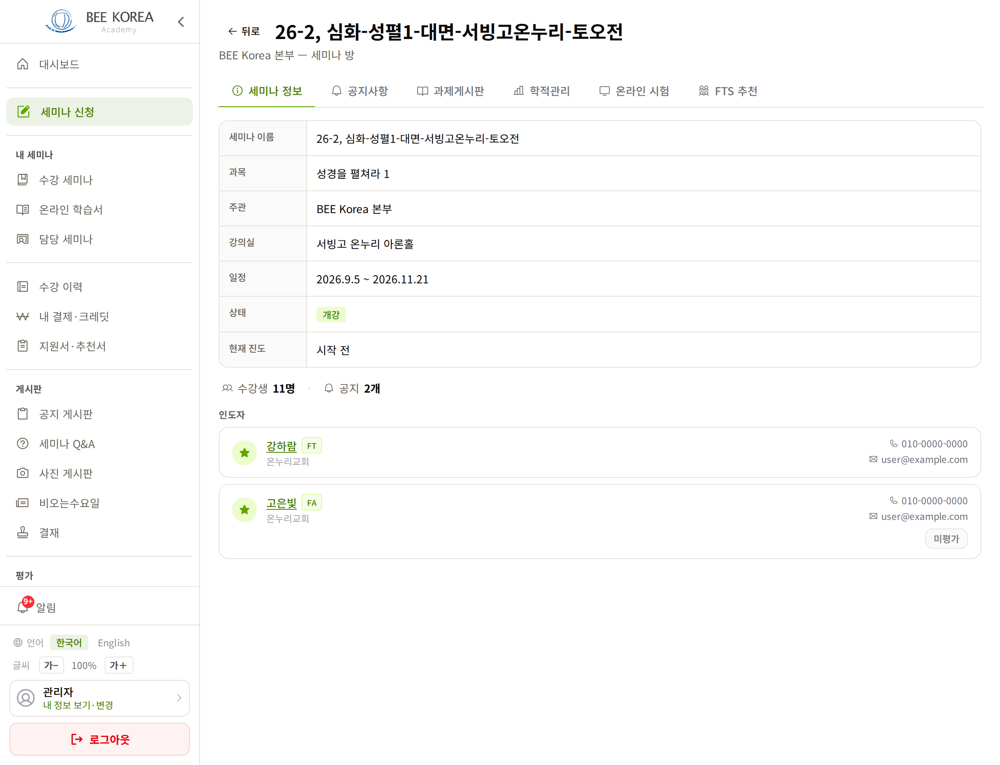
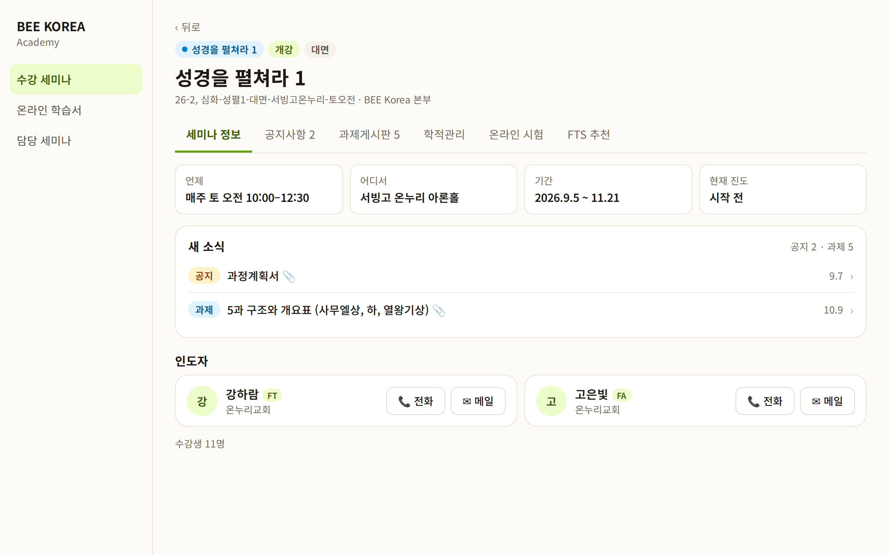
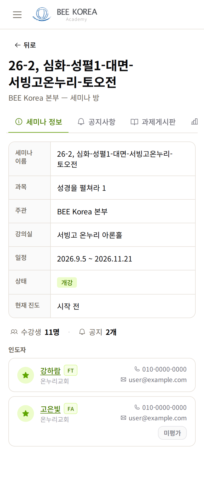
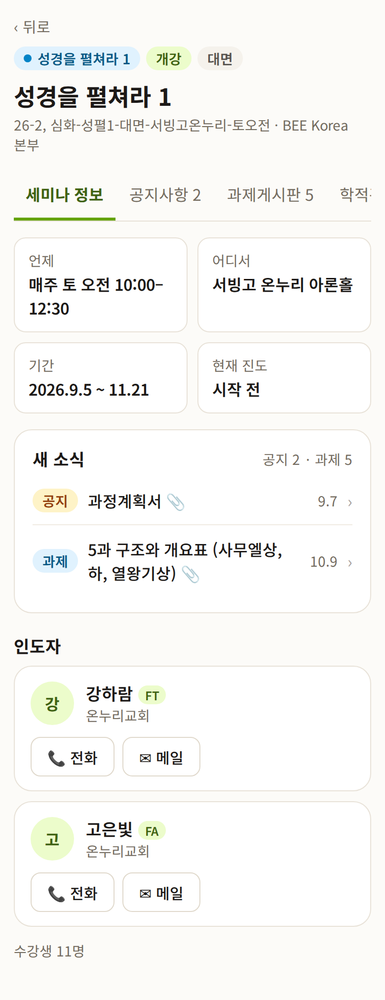

LMS 세미나 방 — 디자인 시안 1차
2026-10-11 · 학생과 인도자가 수업 내내 들어가는 화면의 「세미나 정보」 탭 · 반 정보는 실제 값(성경을 펼쳐라 1, 서빙고 토 오전), 사람 이름·연락처는 가짜 · 아직 적용 전
무엇이 바뀌나
- 제목 = 과목 이름 — 「성경을 펼쳐라 1」. 관리용 이름(26-2, 심화-성펼1-…)은 아래에 작게. 학생용 세미나 상세와 같은 규칙입니다
- 수업 요일·시간을 맨 위에 — 지금 「세미나 정보」에는 기간(9.5~11.21)만 있고 「매주 토 오전 10:00」이 없습니다. 언제 · 어디서 · 기간 · 현재 진도 4칸으로
- 「새 소식」 — 가장 최근 공지 1개와 과제 1개를 첫 화면에. 탭을 하나씩 눌러 보지 않아도 무엇이 올라왔는지 보입니다. 누르면 그 글로 갑니다
- 탭에 개수 — 「공지사항 2」·「과제게시판 5」
- 인도자 연락은 큰 단추로 — [전화]·[메일]을 눌러 바로 걸고 보냅니다(노년층 배려 — 작은 글자 번호를 눌러야 하던 것)
- 중복 정리 — 「세미나 이름」 줄(제목과 같음) · 「상태」 줄(제목 위 칩으로) · 표 모양 7줄 → 4칸
PC


휴대폰


정해 주실 것
- 인도자 전화번호·메일 주소를 글자로도 보일까요? 시안은 [전화]·[메일] 단추만 있습니다. 번호를 받아 적고 싶은 분이 있으면 단추 옆에 번호도 둡니다.
- 「새 소식」에 공지·과제를 몇 개씩 보일까요? 시안은 가장 최근 1개씩입니다.
FA 평가 단추(「미평가」)와 학생에게만 보이는 것들은 그대로 둡니다 — 시안은 관리자로 본 화면이라 그 단추 자리만 빠져 있습니다. 공지·과제 게시판 탭은 이번엔 손대지 않습니다.